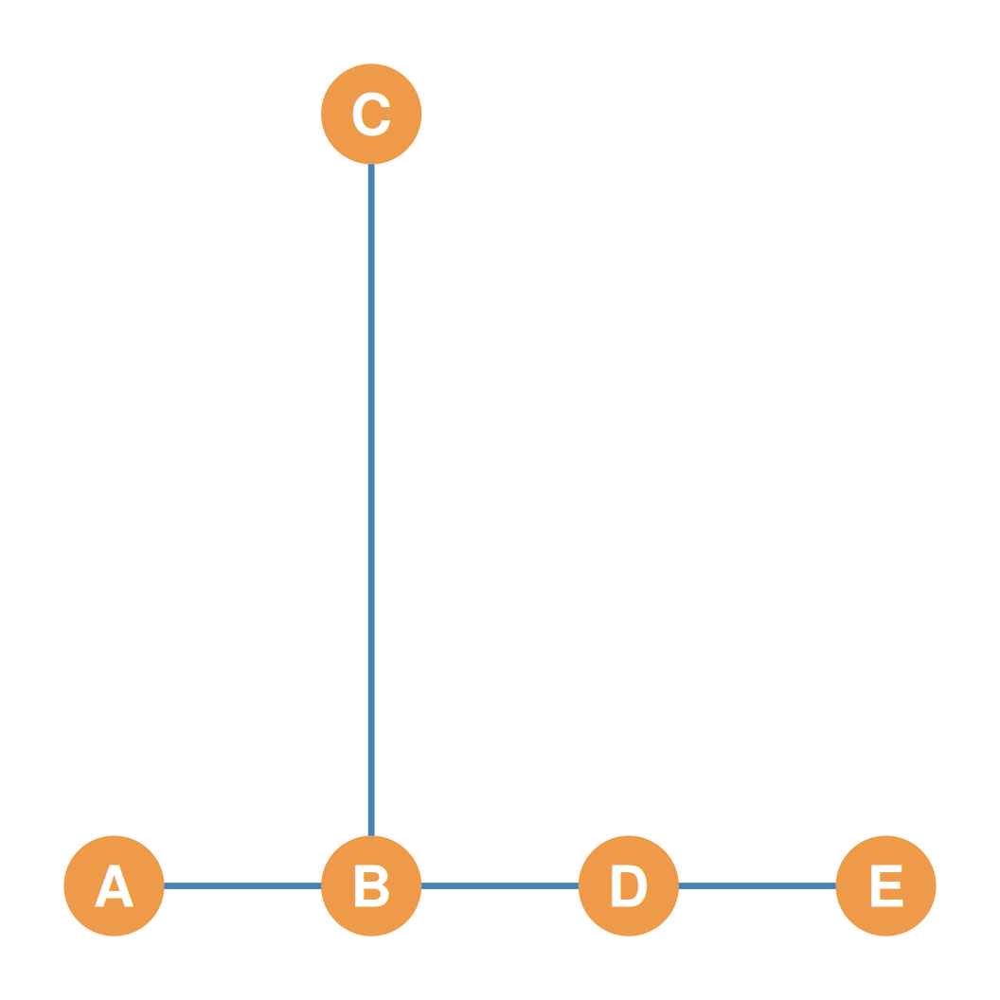
Graph Theory: Trees, Forests & Efficiency
The Basics of Social Network Analysis
Tree Graphs & Forests
What is a Tree Graph?
- If a graph is both connected and has no cycles (acyclic), then it is a tree graph.
- The Cycle Restriction:
- A cycle is a path that begins and ends with the same node.
- In a tree graph, you can never start with a node and trace a sequence of distinct edges that take you back to where you started!
Properties of Tree Graphs
- Tree graphs possess several unique mathematical and structural properties:
- The Single Path Property:
- Every pair of nodes in a tree graph is linked by exactly one unique path.
- There are no redundant or alternative paths between any two actors.
- The One-Cycle Property:
- Adding a single new edge connecting any pair of non-adjacent nodes always creates exactly one cycle, destroying its tree status.
- The Single Path Property:
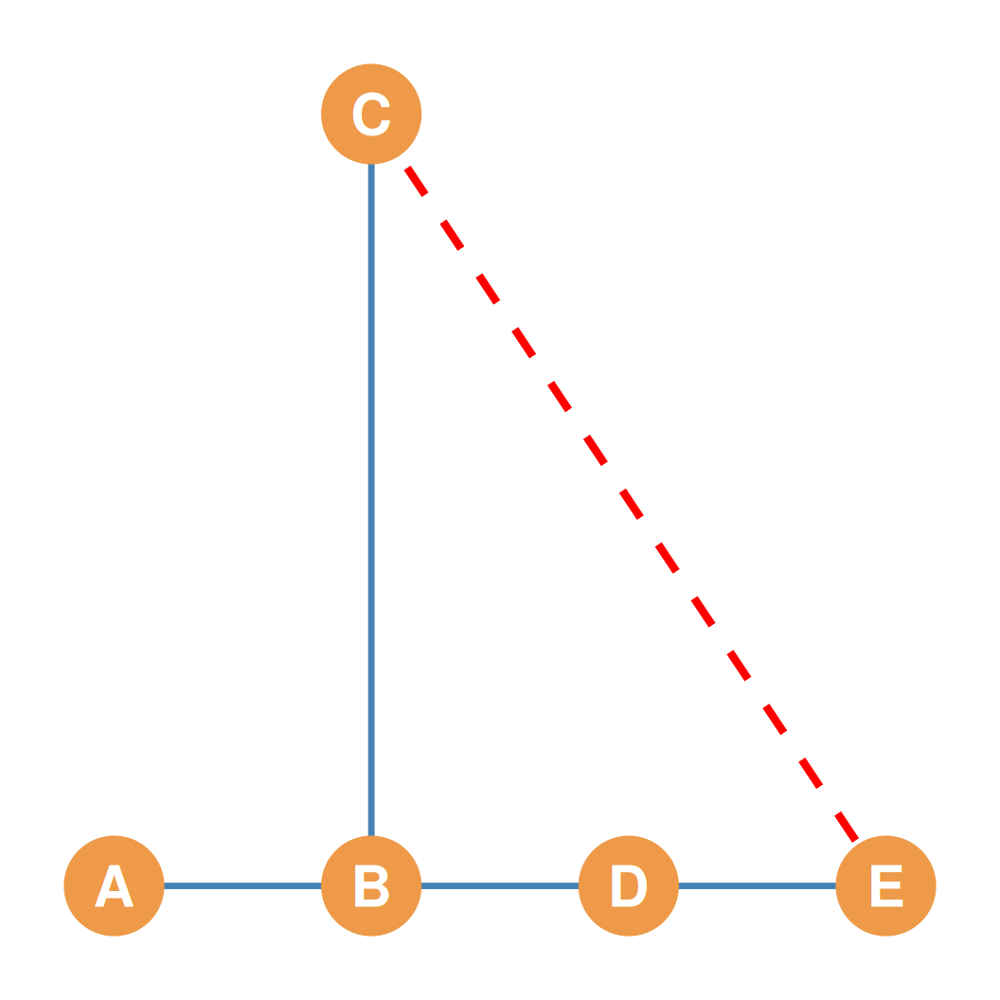
Tree Graph Metrics: Vertices & Edges
- In any tree graph, the number of edges (\(m\)) is always exactly equal to the number of nodes (\(n\)) minus one: \[m = n - 1 \qquad \iff \qquad n = m + 1\]
- Sum of Degrees Identity:
- Recall that the sum of degrees in any undirected graph is \(2m\).
- Substituting \(m = n - 1\), the sum of degrees of a tree graph is always: \[\sum_i k_i = 2(n - 1) = 2n - 2\]
- In a tree graph, the sum of degrees is always exactly twice the number of nodes minus two!
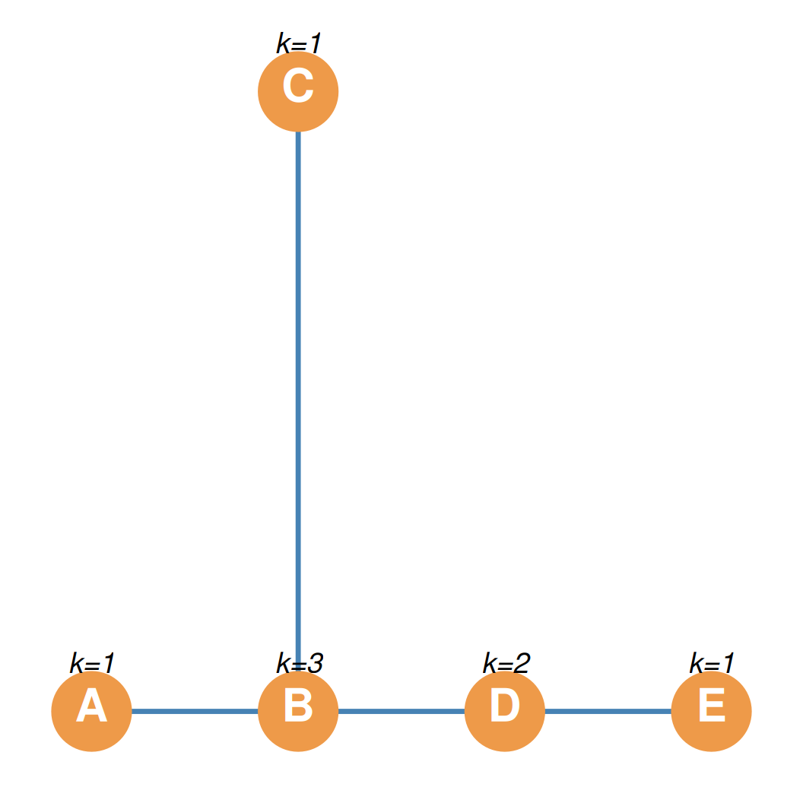
Tree Graph Density
- Because of the strict \(m = n - 1\) edge constraint, tree graph density simplifies beautifully.
- Density of a Tree Graph: \[d(T) = \frac{2m}{n(n-1)} = \frac{2(n-1)}{n(n-1)} = \frac{2}{n}\]
- For our 5-node tree graph on the right (\(n = 5\)):
- The density is: \[d(T) = \frac{2}{5} = 0.40 \quad (40\%)\]
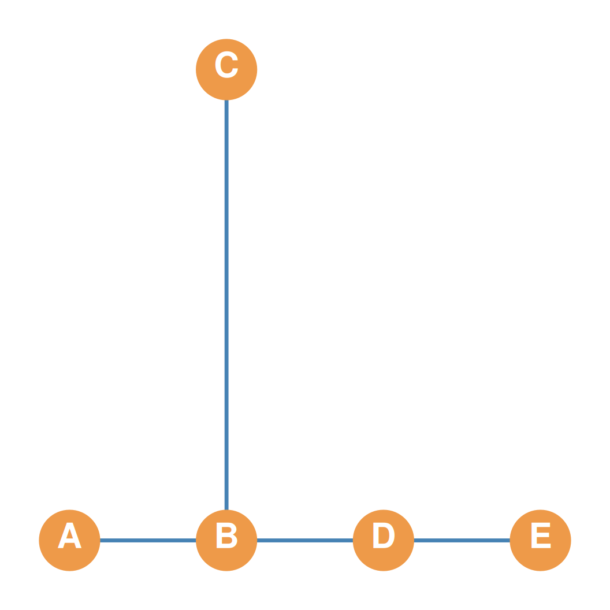
Tree Graph Average Degree
- Average degree in a tree graph also simplifies beautifully due to the edge constraint.
- Average Degree of a Tree Graph: \[\bar{k} = \frac{\sum k_i}{n} = \frac{2m}{n} = \frac{2n - 2}{n}\]
- For our 5-node tree graph on the right (\(n = 5\)):
- The average degree is: \[\bar{k} = \frac{2(5) - 2}{5} = \frac{8}{5} = 1.6\]

Trees as Minimally Connected Graphs
- Trees are minimally connected graphs:
- They are connected using the smallest possible number of edges needed to connect \(n\) vertices.
- The Bridges Rule:
- Removing even a single edge from a tree graph completely disconnects the graph.
- Thus, every edge of a tree graph is a bridge (a minimum edge cutset of size 1)!
- Disconnecting a tree graph by removing any edge splits it into separate connected components, which are themselves trees.
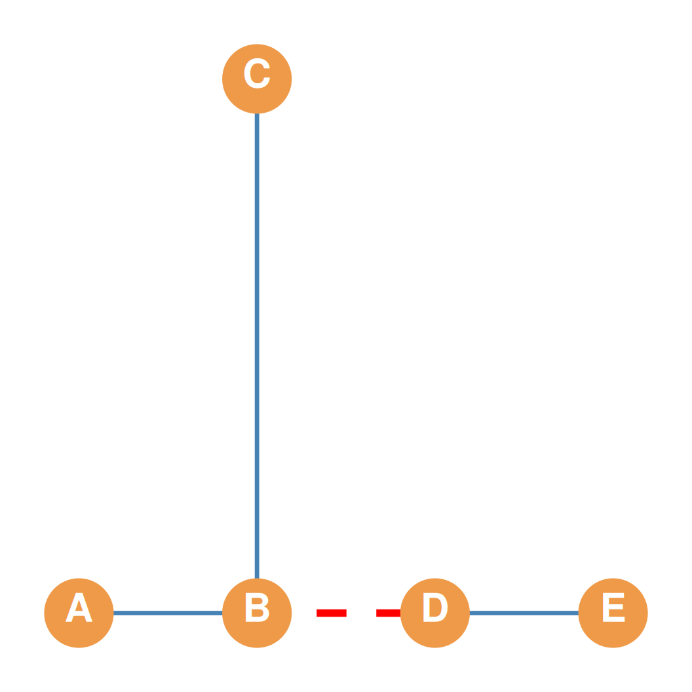
Numerical Example: 8-Node Tree
Let’s compute the metrics for the 8-node tree shown on the right:
- 1. Nodes and Edges:
- Number of nodes: \(n = 8\)
- Number of edges: \(m = n - 1 = 7\)
- 2. Degree of each node:
- \(k_A = 2, k_B = 3, k_C = 3, k_D = 1, k_E = 2, k_F = 1, k_G = 1, k_H = 1\)
- Sum of degrees: \(\sum k_i = 14\)
- Check: \(2(n-1) = 2(7) = 14 \quad \checkmark\)
- 3. Network Density:
- \(d(T) = \frac{2}{n} = \frac{2}{8} = 0.25 \quad (25\%)\)
- 4. Average Degree:
- \(\bar{k} = \frac{2n - 2}{n} = \frac{14}{8} = 1.75\)
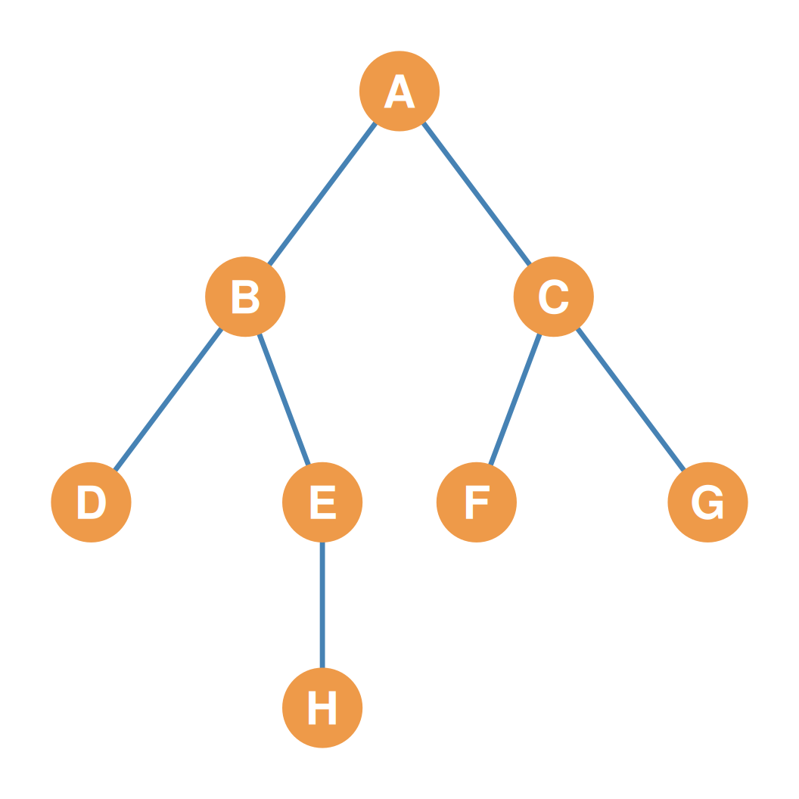
Forests: Visualizing Disconnection
- Forest:
- A disconnected graph whose components are all tree graphs.
- Before (Left):
- A connected 9-node tree graph.
- After (Right):
- Removing edge D-H splits the graph into two separate trees (a forest):
- A bigger tree of 6 nodes on the left (\(\{A, B, C, D, E, F\}\)).
- A smaller tree of 3 nodes on the right (\(\{G, H, I\}\)).
- Removing edge D-H splits the graph into two separate trees (a forest):
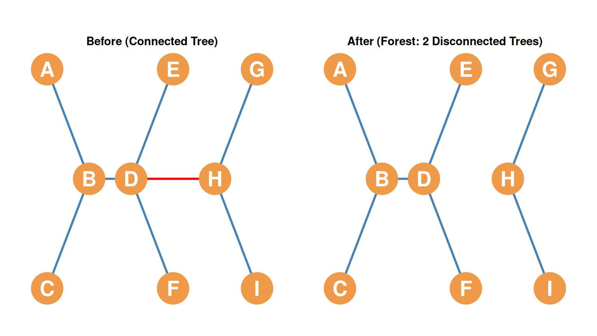
Special Types of Trees: Line, Star & Caterpillar Graphs
- The Line Graph (\(L_n\)):
- A single straight path connecting \(n\) nodes.
- Used to model sequential diffusion processes (like the “Telephone Game”).
- The Star Graph (\(S_n\)):
- A central hub connected to \(n-1\) leaf nodes.
- Represents extreme structural centralization.
- The Caterpillar Graph:
- A central path (“body”) with pendant leaf nodes (“legs”) sticking out of it.
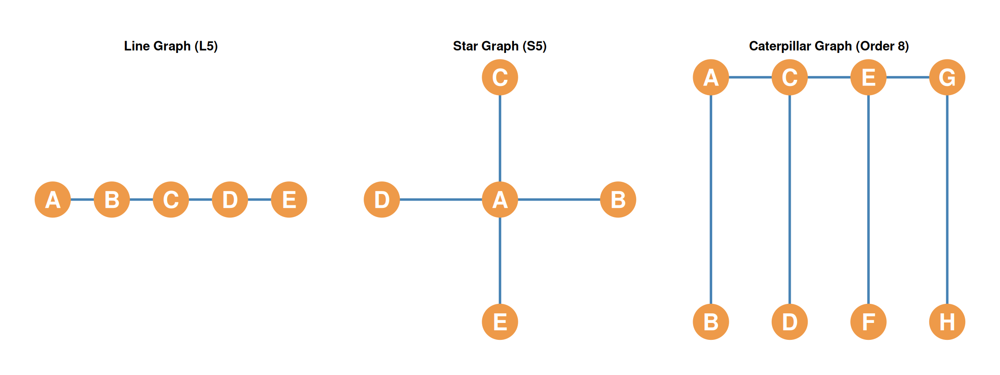
The Graph Efficiency
- Concept (Krackhardt, 1994):
- Measures how economical the connectivity of a graph is.
- A graph is efficiently connected if it uses the minimum possible number of edges to remain connected.
- Formula: \[F(G) = 1 - \left[\frac{2(m - n + 1)}{(n-1)(n-2)}\right]\]
- Where \(m\) is the number of edges and \(n\) is the number of nodes.
- Numerical Proof (The Tree on the Right):
- Pictured on the right is a tree of \(n = 5\) nodes and \(m = 4\) edges.
- Substituting \(n = 5\) and \(m = 4\) into the formula: \[F(G) = 1 - \left[\frac{2(4 - 5 + 1)}{(5-1)(5-2)}\right]\] \[F(G) = 1 - \left[\frac{2(0)}{4 \times 3}\right] = 1 - 0 = 1.0\]
- Beyond Trees (Decreasing Efficiency):
- As edges are added beyond \(m = n - 1\), the numerator \((m - n + 1) > 0\), causing \(F(G)\) to decrease toward \(0.0\).
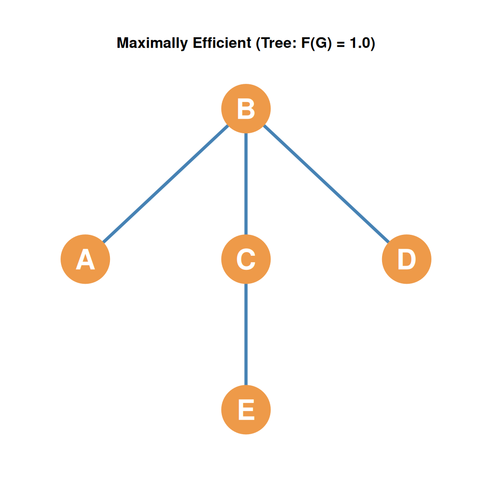
Detailed Example: Graph 1 (Less Efficient)
- Graph 1 Structure:
- Contains \(n = 5\) nodes and \(m = 7\) edges.
- Efficiency Calculation:
- We substitute \(n=5\) and \(m=7\) into the formula: \[F(G) = 1 - \left[\frac{2(7 - 5 + 1)}{(5-1)(5-2)}\right]\] \[F(G) = 1 - \left[\frac{2(3)}{4 \times 3}\right] = 1 - \frac{6}{12} = 0.50\]
- Interpretation:
- With 5 nodes, a connected tree needs only 4 edges.
- This graph has 3 redundant edges (\(7 - 5 + 1 = 3\)), resulting in a low efficiency score of \(0.50\).
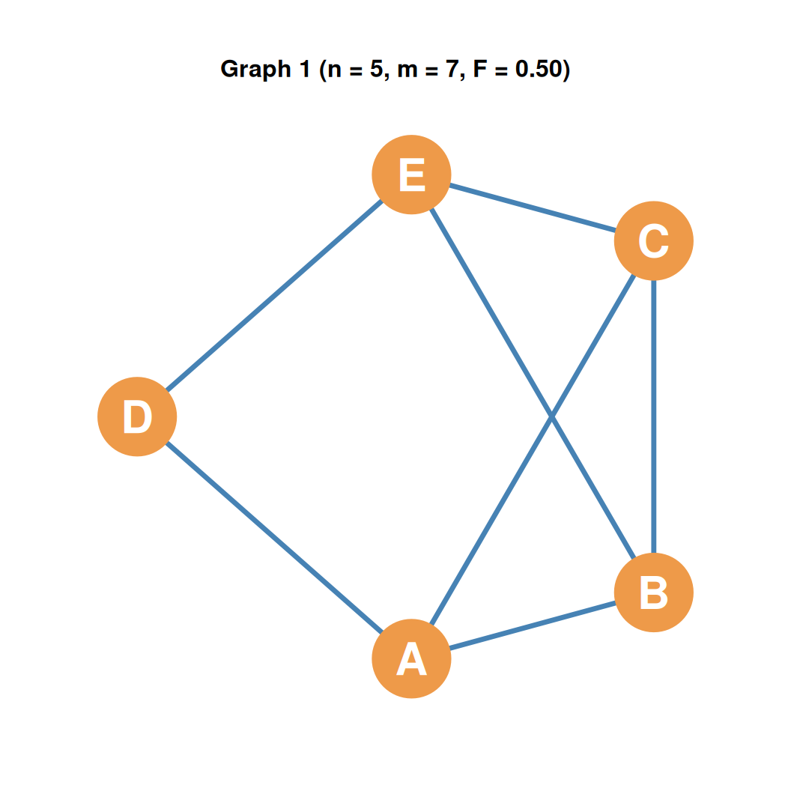
Detailed Example: Graph 2 (More Efficient)
- Graph 2 Structure:
- Contains \(n = 7\) nodes and \(m = 10\) edges.
- Efficiency Calculation:
- We substitute \(n=7\) and \(m=10\) into the formula: \[F(G) = 1 - \left[\frac{2(10 - 7 + 1)}{(7-1)(7-2)}\right]\] \[F(G) = 1 - \left[\frac{2(4)}{6 \times 5}\right] = 1 - \frac{8}{30} \approx 0.73\]
- Conclusion:
- Despite having more edges (\(10\) vs \(7\)), Graph 2 is larger. Its redundancy is distributed over more nodes, yielding a higher efficiency of \(0.73\).
- Graph 2 is more efficient than Graph 1 (\(0.73 > 0.50\)).
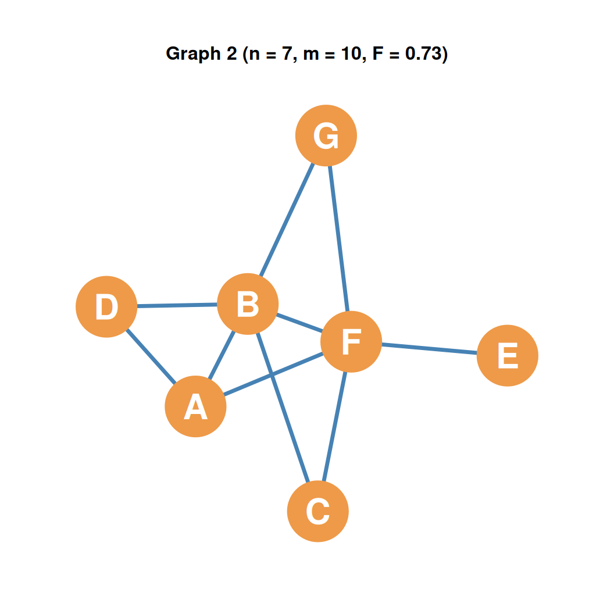
Graph Efficiency: Complete Graphs
- Maximally Inefficient:
- The complete graph (\(K_n\)) is minimally efficient because it has the maximum possible number of edges.
- Number of edges: \(m = \frac{n(n-1)}{2}\)
- Example (\(n=5\) Complete Graph):
- Edges: \(m = \frac{5 \times 4}{2} = 10\)
- Calculation: \[F(G) = 1 - \left[\frac{2(10 - 5 + 1)}{(5-1)(5-2)}\right]\] \[= 1 - \left[\frac{2(6)}{4 \times 3}\right] = 1 - \frac{12}{12} = 0.0\]
- Thus, any complete graph yields \(F(G) = 0.0\).
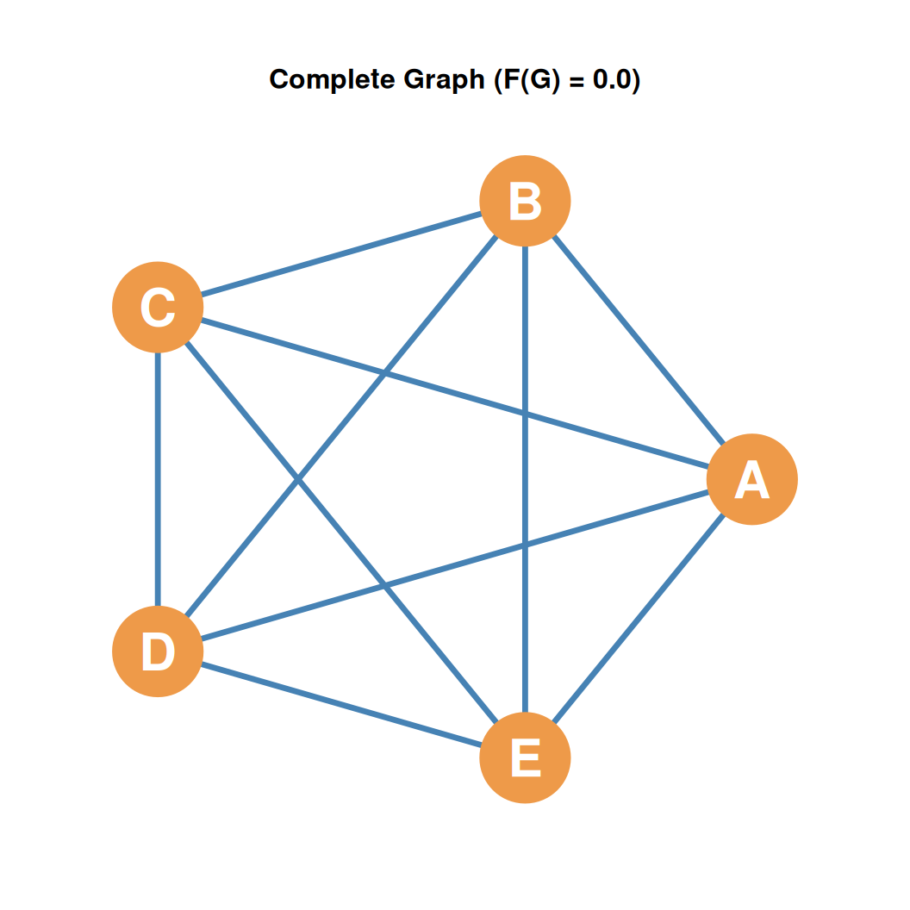
Wrap-Up: Trees, Forests & Efficiency
- Trees are minimally connected: exactly one path between any two nodes, every edge a bridge, and \(m = n - 1\).
- Forests are what remains when a tree loses an edge — disjoint collections of trees.
- Efficiency (Krackhardt, 1994) scores how economical connectivity is, from trees (\(F = 1\)) to complete graphs (\(F = 0\)).
- Next up: We translate this graph structure into the language of matrices.